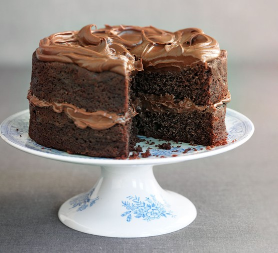

Cake

description
this is a simple dual chocolate layers cake
Ingredientes
- 150g self-raising-flour
- 30g cocoa
- 1 tsp baking powder
- 175g muscovado sugar
- 175g butter, softened
- 3 eggs
- 1 tsp vanilla extract
- 50g dark chocolate, melted
- 200g butter, softened
- 200g icing sugar
- 200g dark chocolate, melted
Steps
-
Heat the oven to 180C/fan 170C/gas 4. Line and butter 2 x 20cm sandwich tins.
-
Put all cake ingredients into the food processor and whizz until smooth. If the mix is a little stiff, add 1-2 tbsp water and whizz again.
-
Divide between tins, level and bake for 20 minutes or until springy. Leave for 5 minutes then cool on a rack.
-
Clean the food processor. Whizz the butter and icing sugar, add the chocolate, whizz again, then sandwich and ice the cake.